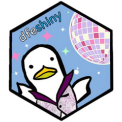

Custom disconnect message
custom_disconnect_message.RdCreate the HTML overlay panel to appear when a user loses connection to a dashboard.
Usage
custom_disconnect_message(
refresh = "Refresh page",
dashboard_title = NULL,
links = NULL,
publication_name = NULL,
publication_link = NULL,
support_contact = "explore.statistics@education.gov.uk",
custom_refresh = NULL
)Arguments
- refresh
the text to appear that will refresh the page when clicked
- dashboard_title
Title of the dashboard
- links
A vector of possible URLs for the public site. Should mostly just be a single URL, but can be two URLs if an overflow site has been set up
- publication_name
The parent publication name
- publication_link
The link to the publication on Explore Education Statistics
- support_contact
Email address for support contact, defaults to explore.statistics@education.gov.uk
- custom_refresh
Custom refresh link, defaults to refreshing the page, main value is if you have bookmarking enabled and want the refresh to send to the initial view instead of reloading any bookmarks
Examples
custom_disconnect_message(
dashboard_title = "DfE Shiny Template",
refresh = "Refresh page",
links = c(
"https://department-for-education.shinyapps.io/dfe-shiny-template",
"https://department-for-education.shinyapps.io/dfe-shiny-template-overflow/"
),
publication_name = "Explore Education Statistics Publication",
publication_link =
"https://explore-education-statistics.service.gov.uk/find-statistics/apprenticeships"
)
#> <script>$(function() { $(document).on('shiny:disconnected', function(event) { $('#custom-disconnect-dialog').show(); $('#ss-overlay').show(); })});</script>
#> <div id="custom-disconnect-dialog" style="display: none !important;">
#> <div id="ss-connect-refresh" role="alert">
#> <p>
#> Sorry, you have lost connection to the
#> DfE Shiny Template
#> dashboard at the moment, please
#> <a id="ss-reload-link" href="#" onclick="window.location.reload(true);">Refresh page</a>.
#> </p>
#> <p>
#> If you are still experiencing issues, please try our
#> <a href="https://department-for-education.shinyapps.io/dfe-shiny-template-overflow/">alternative site</a>. Apologies for the inconvenience.
#> </p>
#> <p>
#> The data used in this dashboard can also be viewed or downloaded via the <a href="https://explore-education-statistics.service.gov.uk/find-statistics/apprenticeships" target="_blank" rel="noopener noreferrer">Explore Education Statistics Publication (opens in new tab)</a> on explore education statistics.
#> </p>
#> <p>
#> Feel free to contact <a href="mailto:explore.statistics@education.gov.uk" target="_blank" rel="noopener noreferrer">explore.statistics@education.gov.uk<span class="sr-only"> (opens in new tab)</span></a> if you require further support.
#> </p>
#> </div>
#> </div>
#> <div id="ss-overlay" style="display: none;"></div>
custom_disconnect_message(
dashboard_title = "DfE Shiny Template",
refresh = "Refresh page",
links = c(
"https://department-for-education.shinyapps.io/dfe-shiny-template"
)
)
#> <script>$(function() { $(document).on('shiny:disconnected', function(event) { $('#custom-disconnect-dialog').show(); $('#ss-overlay').show(); })});</script>
#> <div id="custom-disconnect-dialog" style="display: none !important;">
#> <div id="ss-connect-refresh" role="alert">
#> <p>
#> Sorry, you have lost connection to the
#> DfE Shiny Template
#> dashboard at the moment, please
#> <a id="ss-reload-link" href="#" onclick="window.location.reload(true);">Refresh page</a>.
#> </p>
#> <p>
#> Feel free to contact <a href="mailto:explore.statistics@education.gov.uk" target="_blank" rel="noopener noreferrer">explore.statistics@education.gov.uk<span class="sr-only"> (opens in new tab)</span></a> if you require further support.
#> </p>
#> </div>
#> </div>
#> <div id="ss-overlay" style="display: none;"></div>
custom_disconnect_message(
support_contact = "my.team@education.gov.uk",
custom_refresh = "https://department-for-education.shinyapps.io/my-dashboard"
)
#> <script>$(function() { $(document).on('shiny:disconnected', function(event) { $('#custom-disconnect-dialog').show(); $('#ss-overlay').show(); })});</script>
#> <div id="custom-disconnect-dialog" style="display: none !important;">
#> <div id="ss-connect-refresh" role="alert">
#> <p>
#> Sorry, you have lost connection to the
#> dashboard at the moment, please
#> <a id="ss-reload-link" href="https://department-for-education.shinyapps.io/my-dashboard">Refresh page</a>.
#> </p>
#> <p>
#> Feel free to contact <a href="mailto:my.team@education.gov.uk" target="_blank" rel="noopener noreferrer">my.team@education.gov.uk<span class="sr-only"> (opens in new tab)</span></a> if you require further support.
#> </p>
#> </div>
#> </div>
#> <div id="ss-overlay" style="display: none;"></div>